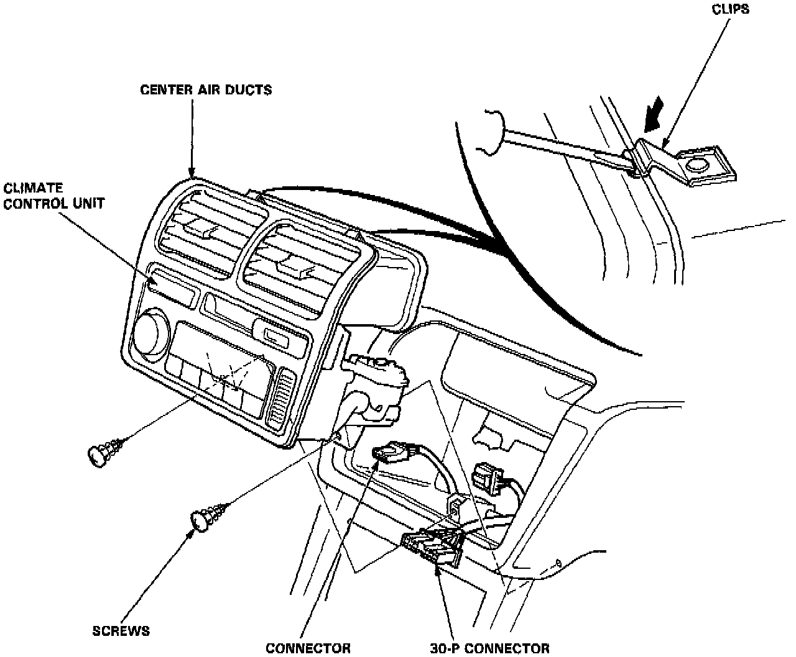

Electronic Climate Control
REMOVALNOTE: SRS wire harness is routed near the console.
WARNING: All SRS wire harnesses and connectors are colored yellow. Do not use electrical test equipment on these circuits.
CAUTION: Be careful not to damage the SRS wire harnesses when servicing the console.
1. Remove the radio cassette unit.

2. Remove the screws then disconnect the automatic climate control unit connectors.
3. Remove the climate control unit assembly by pushing the clips down as shown.
CAUTION: Be careful not to damage the center console panel and the dashboard.